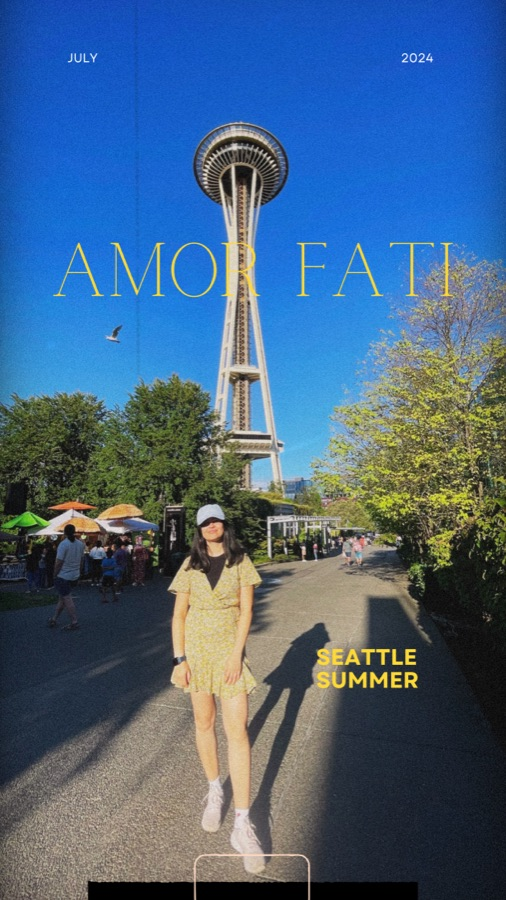
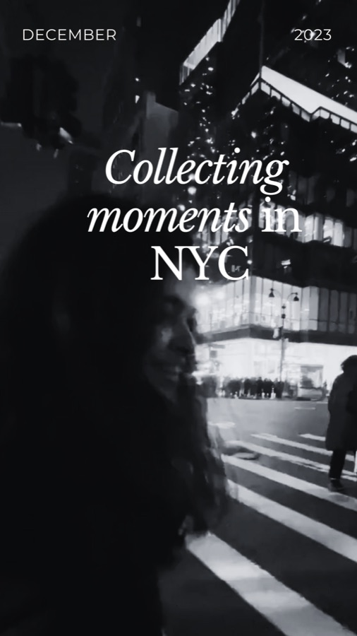

Design system · v0.1
Overview
Quiet window, loud world. One white page held up against a photograph, photos treated like prints, and type that steps back so the work can lead.
01 — Principles
How it should feel
Frame
A window onto a place
Each key screen is a large rounded white window floating on a full-bleed, grainy photograph.
Objects
Photos are prints
White borders, soft shadows and slight tilts. They stack, fan and lift when you reach for them.
Voice
Three voices, used on purpose
Grotesk for UI, an editorial serif for statements, handwriting for asides. Never more than two on a screen.
Air
Whitespace is the material
Tiny labels, generous margins. Colour comes from the photographs; the interface stays neutral.
02 — Colour
Warm neutrals, one accent
The orange accent is reserved for counts, focus rings and the occasional sticker. Imagery carries everything else.
03 — Typography
Grotesk, serif, mono, hand
Geist for interface and the paper-cut display, Instrument Serif for statements, Geist Mono for labels, Caveat for annotations.
Cutout · Geist 600
Product Designer
Statement · Instrument Serif
A week in Seattle. Ferries, fog and four rounds of usability testing.
Title · Geist 500
Create a unique collection
Body · Geist 400
Body copy is set at 15px with generous leading and kept short. Secondary text uses Ink 2 so headings stay in front.
Label · Geist Mono
Scroll to explore
Annotation · Caveat
Lakes at 6 in the morning
04 — Shape
Space, radius, elevation
A 4pt spacing scale. Radius grows with the size of the object. Shadows are soft and short, except when something is lifted.
Spacing
Radius
Elevation
05 — Controls
Buttons, filters, navigation
Pills everywhere. The mono nav fades inactive items back instead of underlining the active one.
06 — Photos
Prints, stacks and tiles
Every image gets the white print border. Tilt between −10° and 10° with --r. Hover lifts a print; hovering a tile fans its stack.


07 — Composition
Editorial spread
Prints overlap on the left, a serif statement on the right, handwritten asides tie them together, and a thumbnail strip shows where you are.

Designing for real people. Research in the field, ideas on paper, and products shaped by every test session.
Research · Prototype

08 — Frame
Window on a photograph
The signature layout. Full-bleed photo with film grain, a white window inset by --frame-gutter, radius 28.
Every screen starts as a window.
Scroll to explore